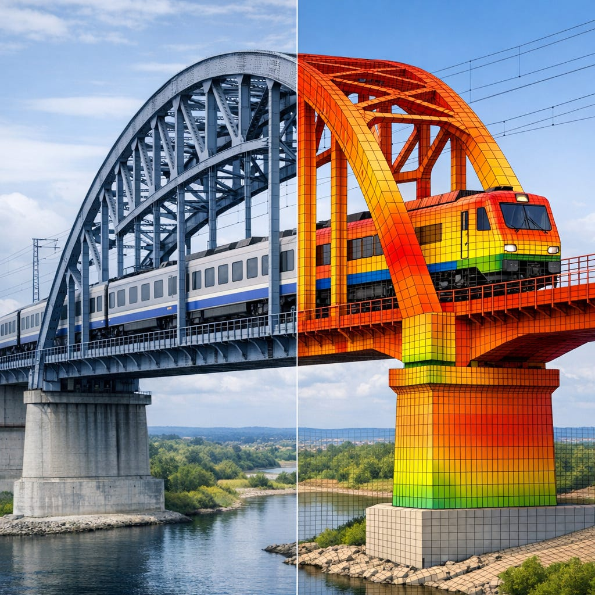
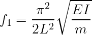
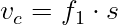
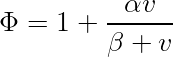
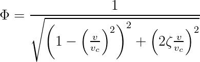
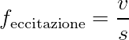
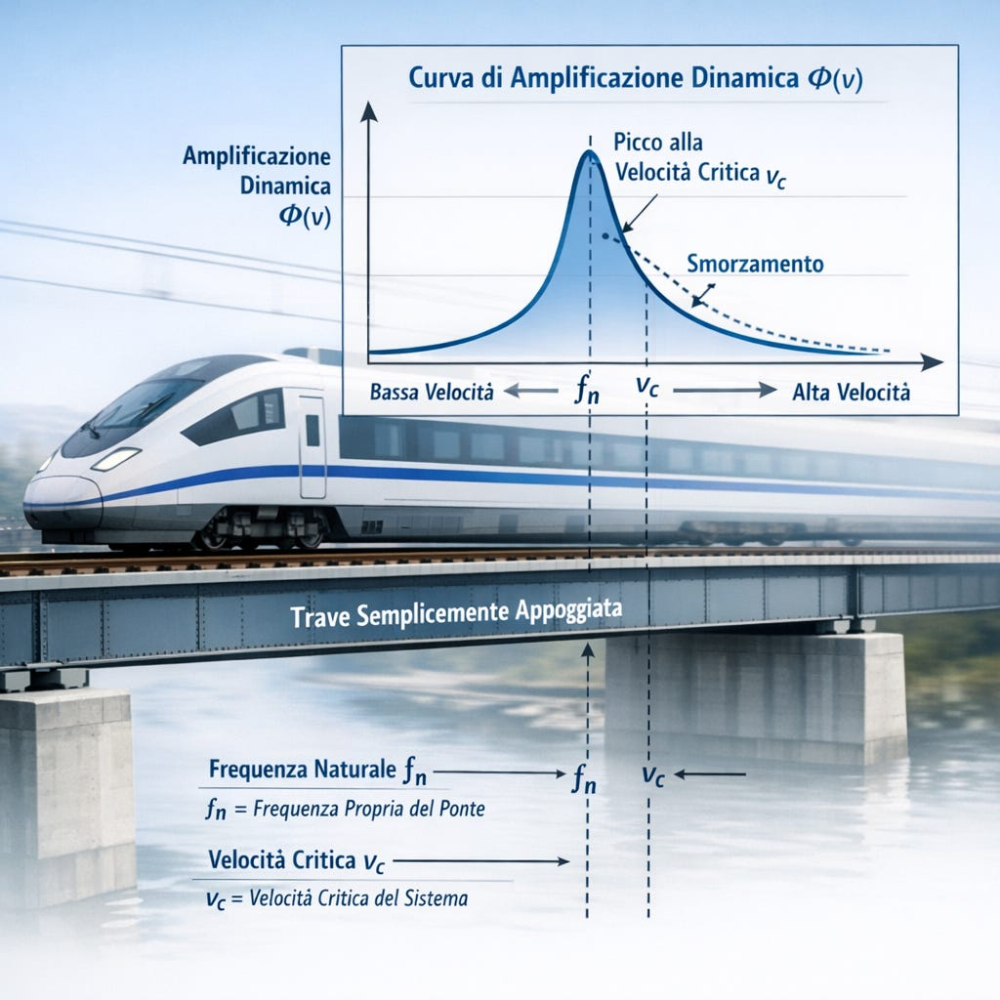

Analisi dinamica del passaggio del treno su un ponte
Impostazione tecnica
Quando un treno attraversa un ponte, il sistema non è statico, il carico si muove e induce vibrazioni. Questo fenomeno è descritto dall' analisi dinamica , fondamentale per rispettare le normative (Eurocodici, UNI EN, ecc.) e garantire sicurezza.

Formule di riferimento






Modello teorico: trave semplicemente appoggiata
Consideriamo una trave di luce L, massa per unità di lunghezza mmm, rigidezza EI, attraversata da un carico P che si muove con velocità costante v.
L'equazione del moto è:
Dove:
- w(x,t) = spostamento verticale
- c = coefficiente di smorzamento
- δ(xˆ’vt) = funzione di Dirac che rappresenta il carico in movimento
Frequenza propria e velocità critica
La prima frequenza naturale della trave:
La velocità critica (risonanza con il passo dei carrelli):
dove s è il passo tra gli assi del treno.
Coefficiente di amplificazione dinamica (Φ)
Le normative forniscono formule semplificate, ad esempio:
oppure, in forma teorica:
dove:
- ζ = coefficiente di smorzamento
- vc€‹ = velocità critica
Questa è la classica curva di risonanza : Φ cresce fino a un picco vicino a vc€‹, poi decresce.

Cosa prevedono le normative ferroviarie
Le normative non si limitano a imporre un limite sul coefficiente di amplificazione dinamica (tipicamente Φ \leq 1,67), ma stabiliscono anche vincoli sulla frequenza naturale del ponte per ridurre il rischio di risonanza.
Limiti sulla frequenza propria
Secondo EN 1991-2 (Eurocodice) :
- La prima frequenza verticale del ponte deve essere maggiore di 3 Hz per ponti ferroviari ad alta velocità.
- Per ponti di luce maggiore, il limite può essere più basso, ma mai inferiore a circa 1,5 Hz.
Questi valori derivano dal fatto che:
- La frequenza di eccitazione del treno è legata al passo dei carrelli e alla velocità:
dove v è la velocità del treno e s il passo tra gli assi.
- Se feccitazione ‰ˆ f1 (frequenza propria del ponte), si ha risonanza, con amplificazione dinamica elevata.